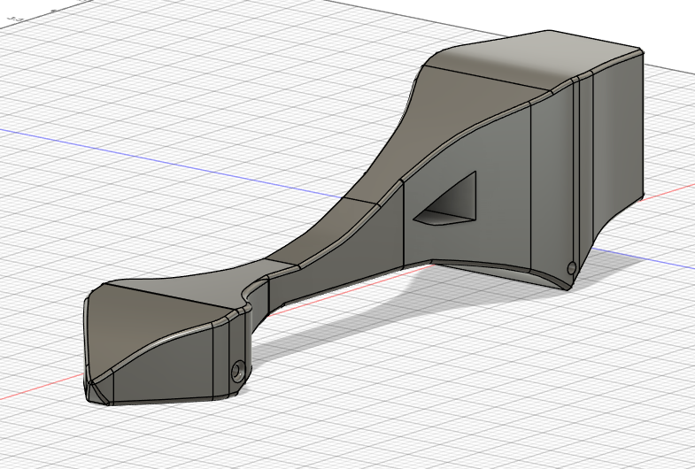

Project overview
This project gave me a chance to take a vehicle concept from a digital model into a physical build. The CAD screenshot below is from my original Autodesk Fusion work; it documents the design process rather than the finished physical car.
CAD design
I designed the car body in Autodesk Fusion, then used the digital model to guide the physical fabrication. I printed a side view of the design and glued the printed templates onto a block of wood to transfer the shape before cutting.

Physical build
After designing the body in Autodesk Fusion, I printed a side view and glued the printed templates onto a block of wood. I cut the body out by hand with a bandsaw, then hand-sanded it to refine the shape. I finished the build by hand-painting the Gulf-inspired racing livery.
This process took the project from a digital design to a physical object using a simple, hands-on workflow: model the shape, transfer it to the material with printed templates, cut, sand, and paint.
I still have the finished car and plan to add a photograph of it here.
Testing
The car recorded the fastest run in my class over an approximately 80-foot course. I don't currently have competition photos, so this result is documented in text rather than represented by an unrelated image.
← Back to selected work